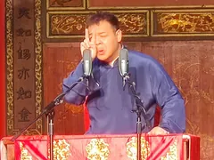
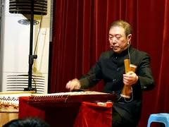
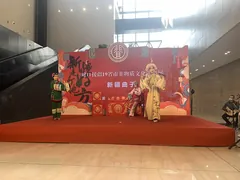
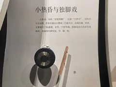
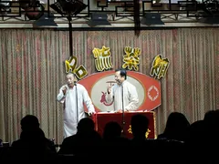
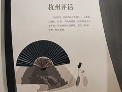

非遗图鉴 / 市井评话
05
非遗图鉴 · 曲艺
市井评话
曲艺 · 145 项、213 子项 · 第 1 / 3 页（Ⅴ-1 至 Ⅴ-60）
每一条只列名录上的事实：编号、名称、申报地区或单位、公布年份和批次。详情看中国非物质文化遗产网的官方页。在名录检索里查这一门类 →
- Ⅴ-1
- Ⅴ-2

皮五辣子 扬州市曲艺研究所 倪真扬图：Augoustoshai / CC BY-SA 4.0 / 维基共享资源。本站已缩放裁切，按 CC BY-SA 4.0 同样许可共享。 - Ⅴ-3
福州评话
- 福建省福州市2006 第一批 · 新增项目官方页 →
- Ⅴ-4
- Ⅴ-5
- Ⅴ-6
- Ⅴ-7
木板大鼓
- 河北省沧县2006 第一批 · 新增项目官方页 →
- Ⅴ-8
- Ⅴ-9
潞安大鼓
- 山西省长治市2006 第一批 · 新增项目官方页 →
- Ⅴ-10
- Ⅴ-11
- Ⅴ-12
河洛大鼓
- 河南省洛阳市2006 第一批 · 新增项目官方页 →
- Ⅴ-13

温州鼓词。表演者陈小宝，中国曲艺牡丹奖表演奖得主图：三猎 / CC BY-SA 4.0 / 维基共享资源。本站已缩放裁切，按 CC BY-SA 4.0 同样许可共享。 - Ⅴ-14
陕北说书
- 陕西省延安市2006 第一批 · 新增项目官方页 →
- Ⅴ-15
福州伬艺
- 福建省福州市2006 第一批 · 新增项目官方页 →
- Ⅴ-16
南平南词
- 福建省南平市2006 第一批 · 新增项目官方页 →
- Ⅴ-17
绍兴平湖调
- 浙江省绍兴市2006 第一批 · 新增项目官方页 →
- Ⅴ-18
- Ⅴ-19
- Ⅴ-20
- Ⅴ-21
- Ⅴ-22
锣鼓书
- 上海市南汇区2006 第一批 · 新增项目官方页 →
- Ⅴ-23
绍兴莲花落
- 浙江省绍兴县2006 第一批 · 新增项目官方页 →
- Ⅴ-24
兰州鼓子
- 甘肃省兰州市2006 第一批 · 新增项目官方页 →
- Ⅴ-25
扬州清曲
- 江苏省扬州市2006 第一批 · 新增项目官方页 →
- Ⅴ-26
锦歌
- 福建省漳州市2006 第一批 · 新增项目官方页 →
- Ⅴ-27
- Ⅴ-28
榆林小曲
- 陕西省榆林市2006 第一批 · 新增项目官方页 →
- Ⅴ-29
天津时调
- 天津市2006 第一批 · 新增项目官方页 →
- Ⅴ-30

新疆曲子《拾玉镯》图：HaziiDozen / CC BY-SA 4.0 / 维基共享资源。本站已缩放裁切，按 CC BY-SA 4.0 同样许可共享。 - Ⅴ-31
龙舟说唱
- 广东省佛山市顺德区2006 第一批 · 新增项目官方页 →
- Ⅴ-32
- Ⅴ-33
汉川善书
- 湖北省汉川市2006 第一批 · 新增项目官方页 →
- Ⅴ-34
- Ⅴ-35
东北二人转
東北浪二人轉 Dongbeilang Errenzhuan图：lienyuan lee / CC BY 3.0 / 维基共享资源。本站已缩放裁切。 - Ⅴ-36
凤阳花鼓
- 安徽省凤阳县2006 第一批 · 新增项目官方页 →
- Ⅴ-37
答嘴鼓
- 福建省厦门市2006 第一批 · 新增项目官方页 →
- Ⅴ-38

Small gongs and boards in the Zhejiang Intangible Cultural Heritage Museum, produced aft…图：Yumeto / CC BY-SA 4.0 / 维基共享资源。本站已缩放裁切，按 CC BY-SA 4.0 同样许可共享。 - Ⅴ-39
山东快书
- 山东省2006 第一批 · 新增项目官方页 →
- Ⅴ-40
- Ⅴ-41
- Ⅴ-42
赫哲族伊玛堪
- 黑龙江省2006 第一批 · 新增项目官方页 →
- Ⅴ-43
鄂伦春族摩苏昆
- 黑龙江省2006 第一批 · 新增项目官方页 →
- Ⅴ-44
傣族章哈
- 云南省西双版纳傣族自治州2006 第一批 · 新增项目官方页 →
- Ⅴ-45
- Ⅴ-46
布依族八音坐唱
- 贵州省兴义市2006 第一批 · 新增项目官方页 →
- Ⅴ-47

天津名流茶馆的相声表演图：Amazingloong / CC BY-SA 4.0 / 维基共享资源。本站已缩放裁切，按 CC BY-SA 4.0 同样许可共享。 - Ⅴ-48

京韵大鼓 曲艺演出图：寒秋 / CC BY 2.5 / 维基共享资源。本站已缩放裁切。 - Ⅴ-49
- Ⅴ-50
扬州弹词
- 江苏省扬州市2008 第二批 · 新增项目官方页 →
- Ⅴ-51
长沙弹词
- 湖南省长沙市2008 第二批 · 新增项目官方页 →
- Ⅴ-52
杭州评词
- 浙江省杭州市2008 第二批 · 新增项目官方页 →
- Ⅴ-53
杭州评话
- 浙江省杭州市2008 第二批 · 新增项目官方页 →

Folding fan and attention-catching block in the Zhejiang Intangible Cultural Heritage Mu…图：Yumeto / CC BY-SA 4.0 / 维基共享资源。本站已缩放裁切，按 CC BY-SA 4.0 同样许可共享。 - Ⅴ-54
绍兴词调
- 浙江省绍兴市2008 第二批 · 新增项目官方页 →
- Ⅴ-55
临海词调
- 浙江省临海市2008 第二批 · 新增项目官方页 →
- Ⅴ-56
四明南词
- 浙江省宁波市2008 第二批 · 新增项目官方页 →
- Ⅴ-57
- Ⅴ-58
湖北评书
- 湖北省武汉市2008 第二批 · 新增项目官方页 →
- Ⅴ-59
浦东说书
- 上海市浦东新区2008 第二批 · 新增项目官方页 →
- Ⅴ-60
讲古
- 福建省厦门市思明区2008 第二批 · 新增项目官方页 →